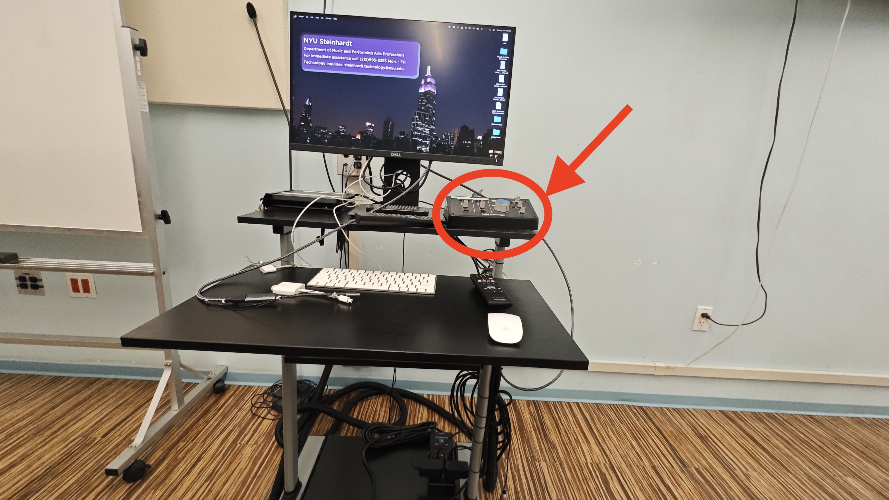
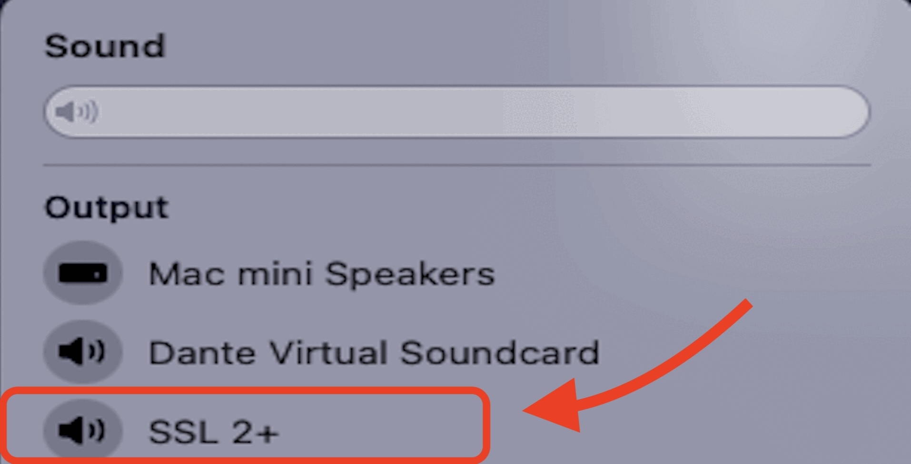
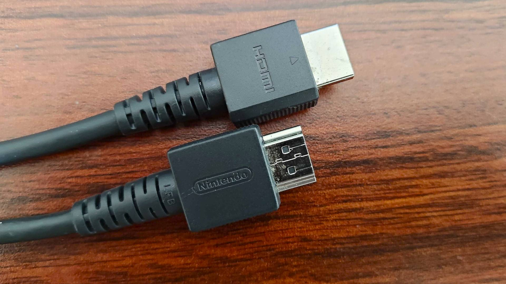
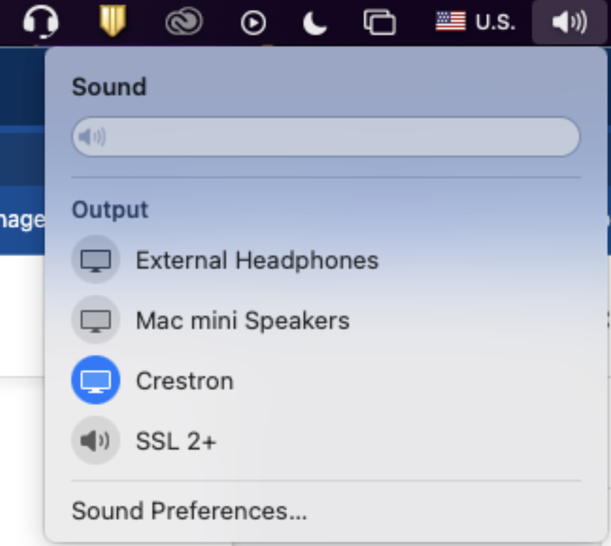

Room C205
Room PC Sound
The Room PC audio should automatically play through the speakers. Adjust the blue knob on the SSL 2+ if needed.

On the computer, in the menu bar in the top right corner, ensure that "SSL 2+" is the selected device.

In the rack in the back of the room, ensure the Furman is on. If you see no lights, turn the switch on.
Laptop Sound
Connect to the HDMI cable in the room.

On the HDMI switcher on the desk, ensure Source 2 is selected. If it isn't, press the Source button until Source 2 has a green light.
On the menu bar in the top right corner (if a MacBook), ensure that "Crestron" is the selected device (the circle to the left will be blue if so, click it if not).

In the rack in the back of the room, ensure the Furman is on. If you see no lights, turn the switch on.